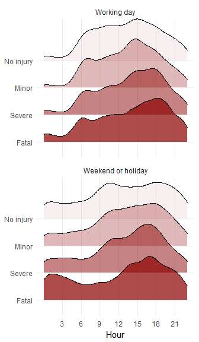
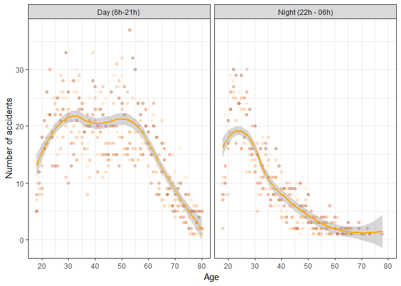

This tutorial is an overview of trafficaccidents data package. The package contains information about traffic accidents in Slovenia examined by the police from 2005 to 2016. Original files1 The original data is published on http://www.policija.si/ were converted to R data frames without changes, except for:
Additional accident geo positions in WGS 84
Additional calendar table (with local holidays)
Translation to English
The tutorial was created using R language (R Core Team 2017R Core Team. 2017. R: A Language and Environment for Statistical Computing. Vienna, Austria: R Foundation for Statistical Computing. https://www.R-project.org/.) and several R extensions. See the list of all used packages at the end of the document.
Note that this is not a thorough analysis of traffic accidents. The only goal is to bring the data and visualization tools to a larger group of users.
Data Structure
Information about accidents is stored in three data frames:
event contains accident events with date, time, position and other accident attributes.
party contains attributes of the parties involved.
calendar contains all dates from 2005 to 2016.
Data structure
Accident Locations
The majority of accidents (93%) are geocoded. Use pos_x and pos_y columns for geographic location.2 Columns pos_x and pos_y are geocoded in D48/GK coordinate reference system. Use columns lon and lat for WGS84 For example, we can plot all accidents locations as points, coloured by road category (road_type):
With “joy plot” from ggjoy package (Wilke 2017Wilke, Claus O. 2017. Ggjoy: Joyplots in ’Ggplot2’. https://CRAN.R-project.org/package=ggjoy.) we can discover the differences of time distributions between road categories. The peaks at rush hour are more visible on roads than on city streets.
With animation it is possible to see accident locations by hour. The following animation was created with gganimate package (Robinson 2016Robinson, David. 2016. Gganimate: Create Easy Animations with Ggplot2. http://github.com/dgrtwo/gganimate.).
All accidents are marked with injury severity (column injury). The plot below compares time distributions of accidents for different levels of severities.
 Distribution of accidents over time
dat <-
event %>%
left_join(calendar, by = "date")
ggplot(dat) +
geom_joy(aes(x = hour, y = injury, alpha = injury), fill = "darkred") +
scale_x_continuous(breaks = 1:7*3, minor_breaks = NULL,
limits = c(0,23), name = "Hour") +
scale_y_discrete(limits = rev(levels(dat$injury)), name = NULL)+
scale_alpha_discrete(range = c(0.06, 0.7), guide = "none") +
theme_minimal() +
facet_wrap(~working_day, ncol = 1)
Cause
Police classifies each accident by main cause. The plot below represent the number of accidents as a circle size and injury severity as color opacity for different accident causes:
There can be several parties involved in same accident. The data includes also some cases where there are several parties at fault for the same accident. Here the events_party data frame is created with single event and some attributes from one party at fault.
Number of alcohol induced accidents per year, by car driver age

R Packages
knitr 1.16
Xie Y (2017). knitr: A General-Purpose Package for Dynamic Report Generation in R. R package version 1.16, http://yihui.name/knitr/.
rmarkdown 1.5
Allaire J, Cheng J, Xie Y, McPherson J, Chang W, Allen J, Wickham H, Atkins A, Hyndman R and Arslan R (2017). rmarkdown: Dynamic Documents for R. R package version 1.5, https://CRAN.R-project.org/package=rmarkdown.